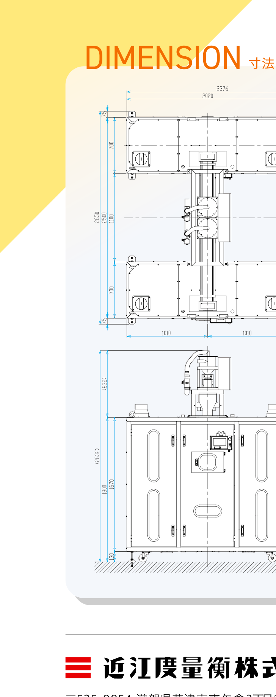

全国約2,000施設への納入実績。サンプル全自動自主検査「フルオートドライヤーシステム」で、穀類の自主検査工程を効率化します。
業界初のサンプル全自動自主検査装置が、さらなる高効率化を実現してフルモデルチェンジ。200年以上の穀類フルオートドライヤー納入で培ったノウハウを結集し、現代のプラント設備に求められる性能を高い完成度で実現した新型システムです。米・麦・大豆の3品目兼用。
計量・乾燥・検査の全工程をオートメーション化。
乾燥精度をたもつ消費電力の抑え込み制御。
約64%削減したコンパクトなサイズ。
米・大豆・麦の3品目兼用が可能。
更新時の据置工程を統合しトータルコスト削減。
搬送用ロボットアーム・昇降エレベーター・定量供給で、サンプルを確実に搬送。
10ボックス×6段×2テーブル、計120サンプルを管理。
抽出したサンプルを自動で検査し、自主検査工程を全自動化。

| 型式 | CFD-120 |
|---|---|
| 対象物 | 穀類（米・麦・大豆） |
| 本体寸法（出荷時） | 幅 2,020 × 高さ 1,800 × 奥行 700（mm） |
| 処理量 | 120サンプル（10ボックス×6段×2テーブル） |
| 操作部 | 7インチ型タッチパネル |
| 塗装色 | マンセル 5Y7/1 |
| サンプルボックス最大投入量 | 約 800g（粉） |
| 機器重量 | 850kg |
| 消費電力 | 200V 約3.6kW 4.2KVA 18A |
| 消費エアー量 | 25L/min |
| 排風量 | 12㎥/min（50Hz）／14㎥/min（60Hz） |
| 備考 | 最大4台での連結可能／ヒーター自動温度制御／セーフティスイッチ／機内照明搭載 |